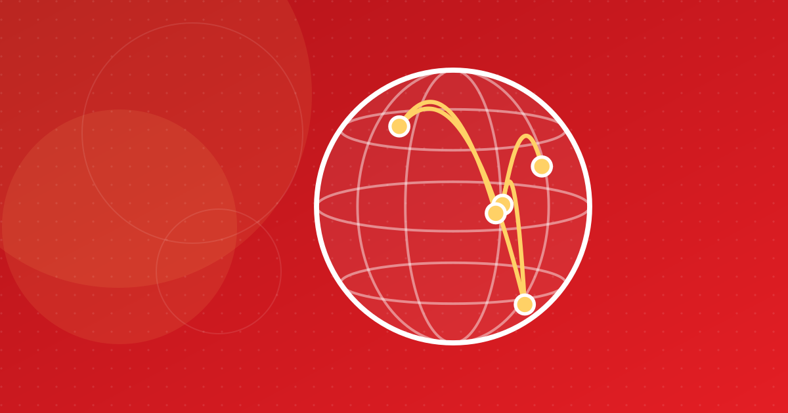

Cheapest Way to Send Money to Tunisia in 2026
Sending €140 to Tunisia cost anywhere from under 1% to over 28% in the World Bank's latest survey. Here is what was cheapest from France and Italy, what we know about Germany, and how to pay less.

Key takeaways
- In the World Bank's August 2025 survey, the cheapest way to send €140 from France was Attijariwafa Bank online to an account (0.61%), against a 5.50% average.
- From Italy, Poste Italiane's online Western Union service (-0.12%) and MoneyGram online to an account (1.79%) were cheapest; branch transfers cost up to 33.57%.
- Germany to Tunisia has no independent price survey, so the only reliable method is to compare same-day quotes for the dinars received.
- Total cost is the fee plus the exchange-rate margin: a zero-fee transfer is not free, and fees weigh more on small amounts.
If you want to send money to Tunisia, the cheapest way depends on where you send from, how much you send and how your family wants to receive it. The latest independent data gives a clear pattern: in the World Bank's survey collected in August 2025, the cheapest way to send money to Tunisia from France or Italy was an online service, and the most expensive was a traditional bank branch. Below are the figures, country by country. For current offers, open our money transfer comparator.
What is the cheapest way to send money to Tunisia right now?
The World Bank's Remittance Prices Worldwide (RPW) database is the only independent price survey covering transfers to Tunisia. Its latest data is for the third quarter of 2025, collected in August 2025; no newer quarter had been published by mid-October 2026. RPW prices two standard amounts: €140 and €345 (the equivalent of $200 and $500).
For €140, the cheapest products in that survey were:
- From France: Attijariwafa Bank's online transfer to a bank account, at a total cost of 0.61% (a €1.50 fee plus a slightly favourable rate). Next came MoneyGram online to a bank account (2.49%) and MoneyGram online to cash pickup (3.21%).
- From Italy: Poste Italiane's online Western Union service, at -0.12%, followed by MoneyGram online by debit card to a bank account (1.79%) and Paysend online (2.38%).
- From Germany: there is no independent survey, so no one can say with data which provider is cheapest (see below).
The averages were far higher: 5.50% for €140 from France (about €7.70) and 5.48% from Italy. These are one-month snapshots, not permanent rankings.
How much does it cost to send money to Tunisia?
Every money transfer to Tunisia has two price components:
- The fee, shown when you pay.
- The exchange-rate margin: the gap between the rate you get for converting euros into dinars and a reference market rate. It is rarely presented as a cost, but it is one.
RPW adds the two into a total cost, expressed as a percentage of the amount sent. That is the figure to compare.
Why "zero fee" is not free
In the France survey, MoneyGram's online transfer to a bank account charged no fee, but its rate margin was 2.49%, about €3.49 on €140. Attijariwafa Bank charged a €1.50 fee and still came out cheaper overall, at 0.61%. Some apps, such as Taptap Send, state that they charge no fee for Tunisia and earn their money on the rate instead. That can still be a good deal; the only way to know is to check how many dinars arrive.
What a negative cost means
A few products, such as Poste Italiane's, show a negative margin or total cost: on the survey day their rate beat RPW's reference rate. Don't expect that every time.
Source: World Bank, Remittance Prices Worldwide (France to Tunisia, Q3 2025, collected August 2025)
View the data
| Label | Value |
|---|---|
| Attijariwafa Bank, online to account | 0.61% |
| MoneyGram, online to account | 2.49% |
| WorldRemit, online to cash pickup | 3.58% |
| Remitly, online to account | 4.08% |
| La Banque Postale (Western Union), online | 4.82% |
| Western Union, online to cash pickup | 5.47% |
| Ria, cash at agent | 6.89% |
| Société Générale, bank branch | 28.2% |
What is the cheapest way to send money from France to Tunisia?
France is Tunisia's largest corridor and the one RPW covers most fully (data collected 8–28 August 2025). The cheapest product from each provider surveyed, for €140:
| Provider and product | Fee | Rate margin | Total cost |
|---|---|---|---|
| Attijariwafa Bank, online to bank account | €1.50 | -0.46% | 0.61% |
| MoneyGram, online to bank account | €0 | 2.49% | 2.49% |
| WorldRemit, online to cash pickup | €1.99 | 2.16% | 3.58% |
| Remitly, online to bank account | €0.99 | 3.37% | 4.08% |
| La Banque Postale (Western Union service), online to cash pickup | €3.99 | 1.97% | 4.82% |
| Western Union, online to cash pickup | €3.99 | 2.62% | 5.47% |
| Ria, cash at an agent | €8.90 | 0.53% | 6.89% |
| Société Générale, bank branch | €36 | 2.53% | 28.24% |
Two patterns stand out. Online beat the counter: Western Union cash handed over at an agent cost 9.81% (a €3.50 fee but a 7.31% margin), against 5.47% online. And branch transfers with high fixed fees were the most expensive by far, although Attijariwafa Bank's own branch transfer, at 2.04%, was an exception.
Western Union Tunisia fees
On Western Union Tunisia fees: in the August 2025 survey, sending €140 online from France cost a €3.99 fee plus a 2.62% margin, or 5.47% in total; for €345 the total fell to 3.78%. Paying cash at an agent cost 9.81% for €140. The same Western Union network sold online by La Banque Postale came to 4.82%, and by Poste Italiane in Italy to -0.12%. The distributor matters, not just the brand.
What is the cheapest way to send money from Italy to Tunisia?
RPW's Italy data for the same quarter averaged 5.48% for €140. The cheapest offers for €140 were:
- Poste Italiane, online by debit card via Western Union, cash pickup: -0.12% (fee €0.99).
- MoneyGram, online by debit card to a bank account: 1.79% with no fee (2.19% by credit card).
- Paysend, online by debit card: 2.38% (fee €1.50).
- Ria, online by card to cash pickup: 2.54%.
At the other end: Western Union and WorldRemit online at 5.72% each, Xoom at 6.56%, and an Intesa Sanpaolo branch transfer at 33.57%, which is its €47 fee on €140.
How do you send money from Germany to Tunisia cheaply?
The honest answer: there is no independent price survey for Germany to Tunisia. RPW does not cover this corridor, and we found no official German comparison for it. What we could check on providers' own German pages in October 2026:
- Western Union, Ria, Remitly, Wise, Paysend and Taptap Send all offer euro to Tunisian dinar transfers from Germany.
- Most quote a price only once you enter an amount, so they cannot be compared in a table.
- Wise's example for €1,000 showed a €28.30 fee when paid by bank transfer, and Wise says it cannot currently guarantee the EUR/TND rate.
- Taptap Send states that it charges no transfer fee for Tunisia; its margin is built into the rate.
- Ria says transfers funded from a bank account take 3–5 business days, while card-funded ones usually arrive within minutes.
From Germany, the only reliable method is to get same-day quotes for your exact amount from two or three regulated providers and compare the dinars received.
Bank account, cash pickup or mobile wallet?
- Bank account: often the cheapest in the survey. In France, three of the four lowest-cost providers paid into an account. The money is credited in dinars, usually within an hour to a few days.
- Cash pickup: useful when the recipient has no account; they collect the money with ID at an agent or bank. Paid for online, it can be reasonable (MoneyGram 3.21% from France, Ria 2.54% from Italy). Paying cash over a counter is where the largest margins appeared.
- Mobile wallet: fewer options. Taptap Send says it can pay into the Kashy wallet; Paysend pays into Tunisian bank accounts and Mastercard cards. See our overview of mobile payments in Tunisia.
For the recipient's side (ID, payout points, conversion), read our guide on how to receive money in Tunisia.
Is the fastest transfer also the most expensive?
Not necessarily. From France, MoneyGram's online transfer to an account arrived in less than an hour at 2.49%, while Attijariwafa Bank's 0.61% option arrived the next day. Société Générale's branch transfer was both the slowest (3–5 days) and the most expensive. If the money is not urgent, waiting a day can save you money; if it is, compare the fast options with each other.
How do you send money to Tunisia safely?
- Use a bank or an authorised payment institution. A provider licensed in one EU country can serve the others: Western Union's online service is run by an Austrian bank supervised by the FMA, Ria by a Spanish payment institution registered with the Banco de España, Remitly Europe and Paysend EU by the Central Bank of Ireland.
- Check the entity named in the terms against the national registers: REGAFI in France, the Banca d'Italia's registers in Italy, BaFin's company database in Germany.
- Avoid informal channels. Unlicensed networks and cash couriers give you no recourse if the money disappears, and can breach anti-money-laundering and exchange rules. Leaving France with €10,000 or more in cash must be declared to customs.
Formal transfers also feed Tunisia's foreign-currency earnings, as we explain in our article on diaspora remittances. This is general information, not legal advice.
How to pay less: practical tips
- Compare on the day you send. Rates move daily, and RPW's figures are an August 2025 snapshot.
- Compare the dinars received, not the fee. Check that the amount in TND your recipient will get is shown before you pay.
- Send larger amounts less often. Fees are partly fixed: Western Union online from France cost 5.47% on €140 but 3.78% on €345, and the French average fell from 5.50% to 3.78%.
- Use first-transfer promotions knowingly. In October 2026, Ria showed a zero fee on a first transfer with a promo code and Remitly advertised a "welcome rate" on the first €1,000 from Germany. For regular transfers, compare the standard price.
- Pay online rather than in cash at a counter.
- Check the rate against the Central Bank of Tunisia's daily reference rate to see how big the margin is.
Before your next transfer, check our comparator for sending money to Tunisia: it lists every World Bank-surveyed offer for France and Italy, the providers serving Germany, and an updated euro to dinar exchange rate.
Frequently asked questions
What is the cheapest way to send money to Tunisia?
In the World Bank's survey collected in August 2025, online services were usually cheapest. For €140, Attijariwafa Bank's online transfer to an account cost 0.61% from France, and Poste Italiane's online Western Union service cost -0.12% from Italy. Prices change, so compare the dinars received on the day you send.
How much does Western Union charge to send money to Tunisia?
In the August 2025 World Bank survey, sending €140 online from France cost a €3.99 fee plus a 2.62% exchange-rate margin, or 5.47% in total. Paying cash at an agent cost 9.81%. From Italy, Western Union online cost 5.72% for €140. Check the current quote before sending.
Is it cheaper to send to a bank account or for cash pickup in Tunisia?
Bank-account transfers were often the cheapest in the survey: three of the four lowest-cost providers from France paid into an account. Cash pickup paid for online can be reasonable, but handing over cash at an agent's counter carried the largest margins.
What is the cheapest way to send money from Germany to Tunisia?
Nobody can say with data: the World Bank does not survey the Germany to Tunisia corridor. Western Union, Ria, Remitly, Wise, Paysend and Taptap Send serve it, but most only quote once you enter an amount. Get same-day quotes from two or three regulated providers and compare the dinars received.
Are zero-fee money transfers to Tunisia really free?
No. A provider with no fee still earns a margin on the euro to dinar exchange rate. In the August 2025 France survey, MoneyGram's no-fee online transfer to an account had a 2.49% margin, more than Attijariwafa Bank's 0.61% total cost with a €1.50 fee.
Sources
- Remittance Prices Worldwide: France to Tunisia corridor — World Bank
- Remittance Prices Worldwide: Italy to Tunisia corridor — World Bank
- Geld nach Tunesien senden — Wise
- Send money to Tunisia from Germany — Ria Money Transfer
- Send money to Tunisia — Taptap Send
- Vous voyagez avec de l'argent liquide — Douane française
This article is for information only and is not legal, financial or investment advice. Figures are dated and sourced; check the latest official publications before making decisions.